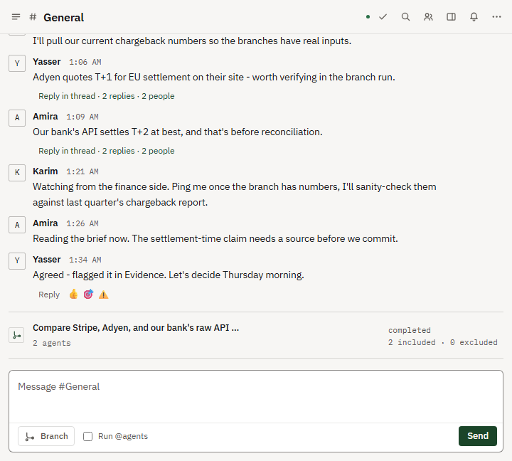

Multiplayer AI workspace
A team makes a hard technical decision with AI, and keeps the receipts.
Conversation branches into parallel specialists, your team picks what's worth keeping, and XYZZY synthesizes a decision brief with the evidence traced beneath it.

The loop
One conversation, several specialists working at once, one accountable decision.
Conversation → parallel specialist branch → select or exclude → synthesis → decision brief with provenance.
Why it's different
Governed execution, a provable audit trail, and infrastructure you control
Governed
Actions wait for human approval before they execute. What an agent may do is re-read from the room's own state at the moment it acts, so leaving a room or losing access takes effect immediately, mid-task.
Provable
Every room's event log is hash-chained: each event is hashed against the one before it, so altering or deleting a row breaks every hash after it — tamper-evident by construction, checkable with the audit CLI. Each Decision also links to the Claims and AgentOutputs behind it, so a synthesis is inspectable down to the run that produced it.
Yours
One Python process and a SQLite file, self-hosted. Point specialists at Ollama, LM Studio, or any OpenAI-compatible server instead of a hosted API. Apache-2.0 licensed, source included.
Apache-2.0 licensed. One Python process, no external services required. 857 tests plus Ruff and strict mypy, green on every push. Security posture and disclosure process in SECURITY.md.
Try it in one command
No account, no signup. It runs on your machine.
docker run -p 8000:8000 -e XYZZY_DEMO=1 ghcr.io/project-nexus-yr/xyzzyOpens a seeded demo workspace at http://localhost:8000, signed in with one click. No account, no config. Prefer source? git clone the repo and run docker compose --profile demo up.
No Docker? It's one Python process — see the README.